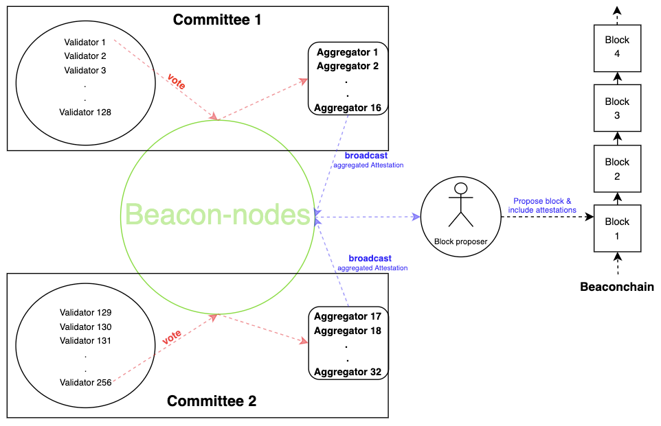

<!doctype html>
<html lang="en">
  <head>
    <meta charset="utf-8">

    <title> Ethereum PoS </title>

    <meta name="author" content="Dhruvin Parikh">

    <meta name="apple-mobile-web-app-capable" content="yes" />
    <meta name="apple-mobile-web-app-status-bar-style" content="black-translucent" />

    <meta name="viewport" content="width=device-width, initial-scale=1.0, maximum-scale=1.0, user-scalable=no, minimal-ui">

    <link rel="stylesheet" href="../reveal.js@0b3e7839ebf4ed8b6c180aca0abafa28c67aee6d/css/reveal.css">
    <link rel="stylesheet" href="../reveal.js@0b3e7839ebf4ed8b6c180aca0abafa28c67aee6d/css/theme/moon.css" id="theme">

    <!-- Code syntax highlighting -->
    <link rel="stylesheet" href="../reveal.js@0b3e7839ebf4ed8b6c180aca0abafa28c67aee6d/lib/css/zenburn.css">

    <!-- Printing and PDF exports -->
    <script>
      var link = document.createElement( 'link' );
      link.rel = 'stylesheet';
      link.type = 'text/css';
      link.href = window.location.search.match( /print-pdf/gi ) ? '../reveal.js@0b3e7839ebf4ed8b6c180aca0abafa28c67aee6d/css/print/pdf.css' : '../reveal.js@0b3e7839ebf4ed8b6c180aca0abafa28c67aee6d/css/print/paper.css';
      document.getElementsByTagName( 'head' )[0].appendChild( link );
    </script>

    <!--[if lt IE 9]>
    <script src="../reveal.js/lib/js/html5shiv.js"></script>
    <![endif]-->

    <style>
      .reveal .slides h1, .reveal .slides h2, .reveal .slides h3 {
        text-transform: none;
      }

      .two-column {
        display: flex;
        flex-wrap: wrap;
      }

      .two-column em {
        margin: 20px;
      }

      .credits {
          font-size: small;
      }

      .left {
              left:-8.33%;
              text-align: left;
              float: left;
              width:49%;
              z-index:-10;
            }
      
    .right {
        left:31.25%;
        top: 75px;
        text-align: left;
        float: right;
        z-index:-10;
        width:49%;
    }

    body {
    background-image: url(../york-scs.jpg);
    background-size: 20%;
    background-repeat: no-repeat;
    background-position: 96% 3%;
}
    </style>
  </head>

  <body>
    <div class="reveal">
      <div class="slides">

<!------------------------------------------------------->


<section data-markdown><script type="text/template">

### ETH Liquid Staking

#### Mini Class For Certificate in Blockchain Development

</script></section>

<section data-markdown><script type="text/template">

## Lesson Topics

* The Genesis Event
* Ethereum 2.0 Keys
* Deposit Process
* Rewards and Penalties
* Attestation

</script></section>

<section data-markdown><script type="text/template">

## Blockchain

</script></section>

<section data-markdown><script type="text/template">

## Bitcoin

</script></section>

<section data-markdown><script type="text/template">

## Ethereum (Blockchain 2.0)


</script></section>

<section data-markdown><script type="text/template">

## Smart Contracts

</script></section>

<section data-markdown><script type="text/template">

## Coin versus Token

</script></section>

<section data-markdown><script type="text/template">

## Consensus Mechanism

</script></section>

<section data-markdown><script type="text/template">

## The merge

</script></section>

<section data-markdown><script type="text/template">

## Ethereum Proof Of Stake

</script></section>

<section data-markdown><script type="text/template">

## Staking

* Process of locking up your token.
* Earn rewards for the period your token is locked
* Lets you contribute to network security

</script></section>

<section data-markdown><script type="text/template">

## The genesis event : keywords

* [Deposit contract](https://etherscan.io/address/0x00000000219ab540356cbb839cbe05303d7705fa#code)
* `Seconds_Per_Eth1_Block` = 14 seconds
* `Eth1_Follow_Distance` = 2048 blocks * 14 seconds
* `Min_Genesis_Time` = 1606824000 (12:00:00 pm UTC | Tuesday, December 1, 2020)
* `Min_Genesis_Active_Validator_Count` = 16,384
* `Genesis_Delay` = 7 days  
* [Ethereum 2.0 Beacon-chain](https://kb.beaconcha.in/ethereum-staking/glossary#beacon-chain)

</script></section>

<section data-markdown><script type="text/template">

## Deposit Process


</script></section>

<section data-markdown><script type="text/template">

## Deposit Status

* The Ethereum 2.0 chain only considers transactions which have been in the deposit contract for at least 2048 Ethereum 1.0 blocks to ensure they never end up in a reorged block. (=ETH1_FOLLOW_DISTANCE)
* In addition to the 2048 Ethereum 1.0 blocks, 64 Ethereum 2.0 Epochs ****must be**** awaited before the beacon-chain recognises the deposit. During these 64 Epochs, validators vote on newly received deposits.
</script></section>

<section data-markdown><script type="text/template">

## Slots

* 32 Slots = 1 epoch. (1 slot = 12 seconds)


</script></section>

<section data-markdown><script type="text/template">

## Epoch

* 1 epoch = 32 slots
* Used in measuring delay during validator queue and finality

</script></section>

<section data-markdown><script type="text/template">

## Epoch and Slots

* 2048 blocks = 2048 x 12 seconds = 24,576 seconds = 409.6 minutes = ~6.82 hours
* 64 Epochs = 64 x 6.4 minutes = 409.6 minutes = ~6.82 hours

</script></section>

<section data-markdown><script type="text/template">

## Validator Status

* Deposited
* Pending
* Active (offline and online)
* Exiting (offline and online)
* Slashing (offline and online)
* Slashed
* Exited
</script></section>

<section data-markdown><script type="text/template">

## Rewards

* Attestation Reward
 * Whistleblower rewards
* Block Rewards

</script></section>

<section data-markdown><script type="text/template">

## Attestation Rewards

* Every Epoch (~6.4 minutes) a validator proposes an attestation (vote) to the network.
* This vote consists of the following segments:
* Committee
* Validator Index
* Finality vote
* Signature
* Chain head vote (vote on what the validator believes is the head of the chain) 

</script></section>

<section data-markdown><script type="text/template">

## Aggregated Attestation 

* Each block one or more committees are chosen to attest. 
* A committee has a minimum of 128 validators, of which 16 are randomly selected to become an aggregator

</script></section>

<section data-markdown><script type="text/template">

## Attestation Inclusion life cycle



</script></section>

<section data-markdown><script type="text/template">

## Attestation Inclusion life cycle

* Generation
* Propagation
* Aggregation
* Propagation
* Inclusion

</script></section>


<section data-markdown><script type="text/template">

## Block Rewards

* Each included attestation in a block will be rewarded (if it is the first time that is included in a block) with base_reward/8 where 8 is the Proposer_Reward_Quotient 

* There is no penalty for not proposing a block.

</script></section>

<section data-markdown><script type="text/template">

## User Interaction flow for liquid staking protocol


</script></section>

<section data-markdown><script type="text/template">

## Liquid Staking Token Opportunites in DeFi


</script></section>

<section data-markdown><script type="text/template">

## Liquidity Pools yield logic


</script></section>

<section data-markdown><script type="text/template">

## Leveraged Staking Strategy


</script></section>

<section data-markdown><script type="text/template">

## References

* [Liquid Staking Derivatives: Introduction & Strategies](https://blog.eonian.finance/liquid-staking-derivatives-introduction-strategies-a6908d7c121a)
* [Beaconchain Knowledgebase](https://kb.beaconcha.in/)
* All ET2.0 related [posts](https://www.attestant.io/posts/) at attestant.io

</script></section>

<section data-markdown><script type="text/template">

## End

</script></section>


<!------------------------------------------------------->


      </div>

    </div>

    <script src="../reveal.js@0b3e7839ebf4ed8b6c180aca0abafa28c67aee6d/lib/js/head.min.js"></script>
    <script src="../reveal.js@0b3e7839ebf4ed8b6c180aca0abafa28c67aee6d/js/reveal.js"></script>

    <script>

      // Full list of configuration options available at:
      // https://github.com/hakimel/reveal.js#configuration
      Reveal.initialize({
        controls: true,
        progress: true,
        history: true,
        center: true,

        transition: 'none', // none/fade/slide/convex/concave/zoom

	math: {
          mathjax: '../lib/MathJax/MathJax.js',
          config: 'TeX-AMS_SVG-full',
	},

        // Optional reveal.js plugins
        dependencies: [
          { src: '../reveal.js@0b3e7839ebf4ed8b6c180aca0abafa28c67aee6d/plugin/markdown/marked.js', condition: function() { return !!document.querySelector( '[data-markdown]' ); } },
          { src: '../reveal.js@0b3e7839ebf4ed8b6c180aca0abafa28c67aee6d/plugin/markdown/markdown.js', condition: function() { return !!document.querySelector( '[data-markdown]' ); } },
          { src: '../reveal.js@0b3e7839ebf4ed8b6c180aca0abafa28c67aee6d/plugin/highlight/highlight.js', async: true, callback: function() { hljs.initHighlightingOnLoad(); } },
          // { src: '../reveal.js@0b3e7839ebf4ed8b6c180aca0abafa28c67aee6d/plugin/math/math.js', async: true },
           // Zoom in and out with Alt+click
           { src: "../reveal.js@0b3e7839ebf4ed8b6c180aca0abafa28c67aee6d/plugin/zoom-js/zoom.js", async: true },
        ]
      });

    </script>

  </body>
</html>